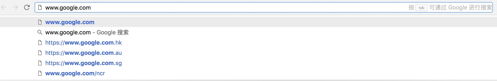
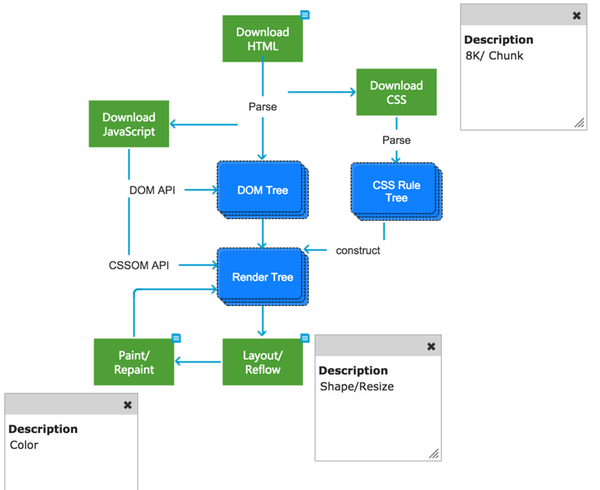

Catagory
Foreword
What really happens when you navigate to a URL
输入地址

输入url
当我们在浏览器输入url时，浏览器已经开始只能匹配了，它会从我们的历史记录里，书签等地方找到可能匹配的字符串，给出补全的url，有些浏览器甚至会把相关的页面展示出来。
浏览器查找IP地址
需要把我们输入的域名地址转换成IP地址，这一过程称为DNS解析。DNS解析是一个递归查询的过程。

DNS域名解析过程
域名解析过程： . -> .com -> google.com. -> www.google.com.
- 浏览器缓存
浏览器缓存DNS记录一段时间，操作系统并没有告诉浏览器每个DNS记录的生存时间，因此浏览器会将其缓存一段固定的时间（一般在2到30分钟之间）。 - 系统缓存
如果浏览器缓存不包含所需的记录，则浏览器进行调用操作系统的缓存。 - 路由器缓存
请求继续到路由器，路由器通常具有自己的DNS缓存。 - IPS服务器缓存
检查的下一个位置是缓存ISP的DNS服务器。 - 根域名服务器缓存
- 顶级域名服务器缓存
- 主域名服务器缓存
DNS负载均衡：成千上万台服务器都可以作为解析的IP地址，DNS可以返回一个适合的机器的IP给用户，从而达到加速和稳定的效果，例如可以根据每台机器的负载量，该机器离用户地理位置的距离等等，这种过程就是DNS负载均衡，又叫做DNS重定向。CDN就是利用了DNS的重定向技术，DNS服务器会返回一个跟用户最接近的点的IP地址给用户，CDN节点的服务器负责响应用户的请求，提供所需的内容。
浏览器向Web服务器发送HTTP请求
在动态网页中，浏览器需要发送请求到网站的服务器。
一般连接头要求服务器保持TCP连接打开以用于进一步的请求。
请求中一般都会包含浏览器对此域的Cookie。
HTTP协议是使用TCP作为其传输层协议的，当TCP出现瓶颈时，HTTP也会受到影响。TCP通过三次握手协议保证通信正常。
HTTP和HTTPS,HTTPS协议的本质就是HTTP + SSL(or TLS).HTTP请求报文由三部分组成:
请求行,请求报头,请求正文。
服务器处理请求并返回HTTP报文.
HTTP响应报文也是由三部分组成:
状态码,响应报头,响应报文。根据状态码浏览器可能做重定向。浏览器会再次跟踪重定向的地址。
浏览器根据返回的响应报文，进行页面的渲染。
浏览器解析渲染页面

页面渲染
浏览器是一个边解析边渲染的过程。首先浏览器解析HTML文件构建DOM树，然后解析CSS文件构建渲染树，等到渲染树构建完成后，浏览器开始布局渲染树并将其绘制到屏幕上。这个过程比较复杂，涉及到两个概念: reflow(回流)和repain(重绘)。DOM节点中的各个元素都是以盒模型的形式存在，这些都需要浏览器去计算其位置和大小等，这个过程称为relow;当盒模型的位置,大小以及其他属性，如颜色,字体,等确定下来之后，浏览器便开始绘制内容，这个过程称为repain。页面在首次加载时必然会经历reflow和repain。reflow和repain过程是非常消耗性能的，尤其是在移动设备上，它会破坏用户体验，有时会造成页面卡顿。所以我们应该尽可能少的减少reflow和repain。计算样式并生成渲染对象的过程为attachment，每个dom节点有一个attach方法，attachment的过程是同步的，调用新节点的attach方法插入到dom树中。
parser：解析， Render Tree:渲染树 Layout:安排布局
浏览器在解析页面的过程中，如果遇到请求外部资源时，就会发送请求获取嵌入在HTML中的资源（如图片、音频、视频、CSS、JS等等），请求是异步的，并不会影响文档的加载。但是，如果遇到JS文件，HTML文档会挂起渲染，要等待JS加载并且解析完毕，在回到断点处继续渲染。因为JS可能改变文档结构，浏览器的JS阻塞行为，是为了更有效的渲染页面。
优化
抛过UI层面，一个网页的体感很大程度就要依靠加载的速度，在这一系列的加载渲染过程中，可优化的项目很多：
缓存，既然浏览器第一个寻找的是缓存，那么我们就要先利用缓存。能缓存在本地的尽量从本地加载。脱离网络，将静态资源缓存在浏览器端。
DNS，必须从网络加载的，要缩短链路时间，合理的利用DNS资源。在减少DNS查找和允许高并发下载中找到折中方案。
减少请求数，合并文件，图片映射，行内图片，懒加载等，都可以提升首屏时间。
避免重定向，重定向不可避免的降低的用户体验，如果只是为了链接两个网站，可以创建一条CNAME指向。
减少DOM元素，可以说避免不必要的DOM深度，浏览器会节省遍历树的时间。
规范CSS，不要使用行内样式，避免后代选择器，尽量使用子选择器，避免使用通配符，选择舍弃@import，样式表放在顶部等。
减少JS对DOM对操作，避免利用JS去修复布局问题，把脚本放在底部。
清除不必要对Cookie，保证Cookie尽量小，给cookie设置合适的域级别，以免影响其它子域，设置合适对有效期。